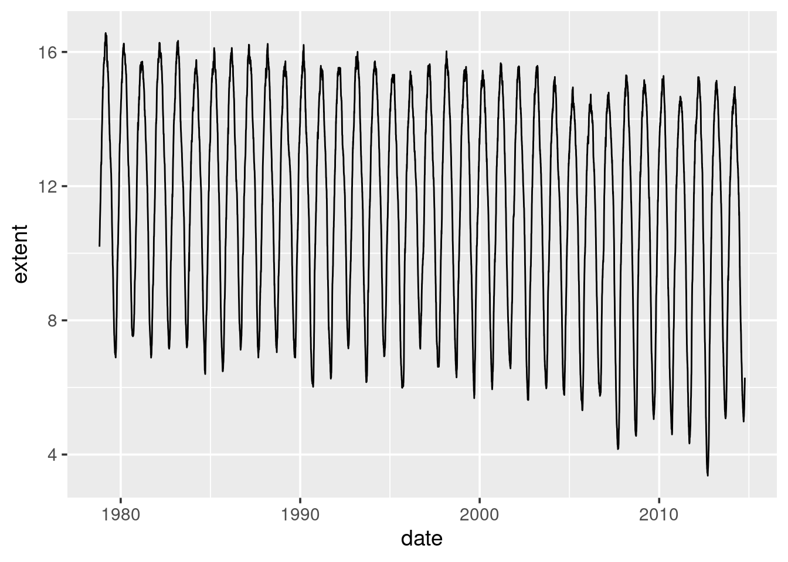
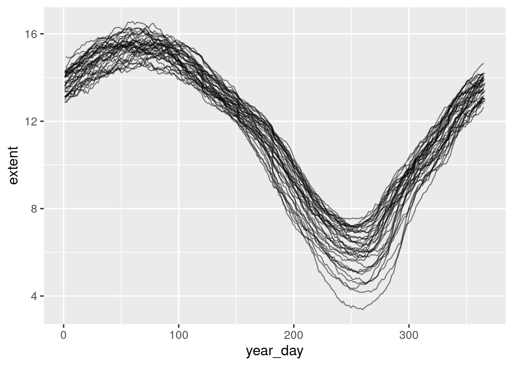
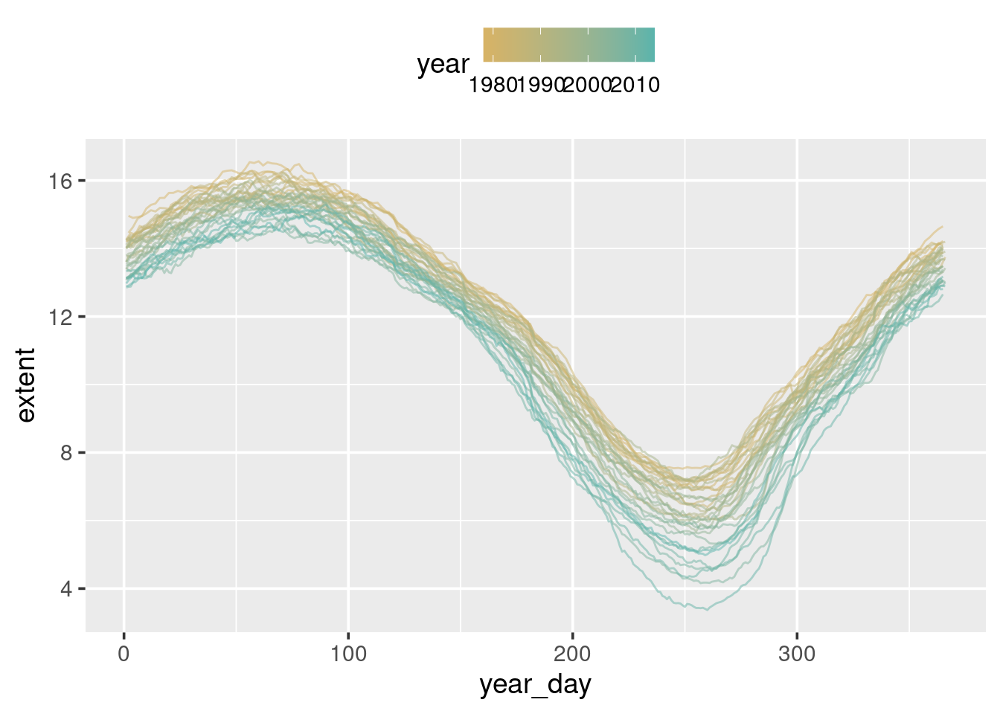
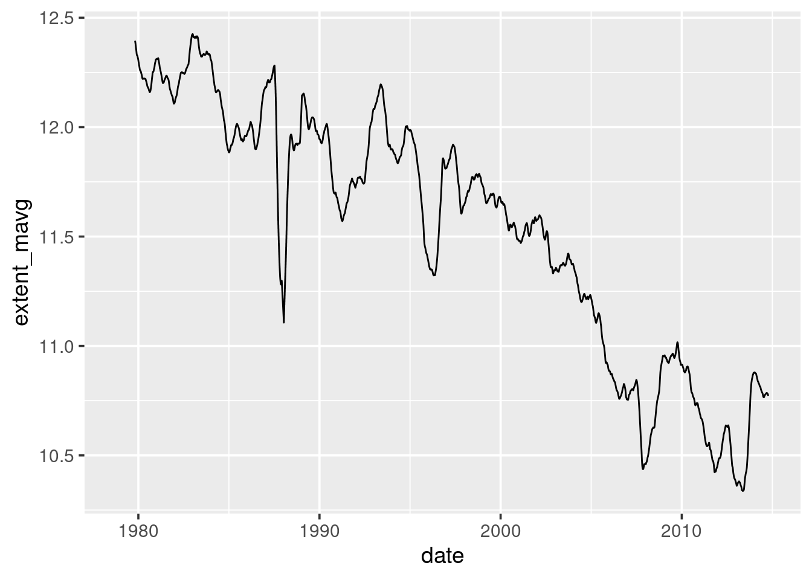

3 Time manipulation
3.1 From last week
- Compare your submission for last week’s coursework with the solution that is on Moodle. Look for differences. Make sure to intergrate any improvements in style into this week’s code.
- Revise the Summary sections in previous chapters.
- As usual, to save the code you write for this week, create new R or Rmd scripts in your R programming folder.
- Write a few introductory comments at the top stating that this script covers the basics handling dates and times in R, along with how to aggregate and summarise data.
- Add your favourite packages to the start of your script:
3.2 Dates and timestamps in R
Figure 3.1: Air traffic control direct aircraft on the ground and through controlled air space. They prevent collisions and organise the flow of air traffic.

Figure 3.2: Left: The GPS tracker a runner users when they go out training continuously logs their location over time; Right: A bank statement is an event-log of transactions.
Date-time data is typically generated by an automated process or system. See Figures 3.1–3.2 for examples.
Data collected in this fashion can be thought of as an event log, with one column containing the date and time of the event, and the remaining columns capturing whatever measures thought necessary.
You may not know this yet, but when working with event-log data, the date-time component can be very frustrating to work with. To begin with, a timestamp may take on a variety of forms:
2014/08/12 19:47
2014/12/08 19:47:01
12/08/2014 19:47:01
19:47:01 12/08/2014
7.47PM 12-AUG-14As you can see timestamps can come in many different formats, which makes recognising and parsing them a challenge. Will R recognise the format that we have? If it does, we still face problems specific to timestamps. How can we easily extract components of the timestamp, such as the year, month, or number of seconds? How can we switch between time zones, or compare times from places that use daylight savings time (DST) with times from places that do not? Handling timestamps becomes even more complicated when we try to do arithmetic with them. Conventions such as leap years and DST make it unclear what we mean by “one day from now” or “exactly two years away”. Even leap seconds can disrupt a seemingly simple calculation. This complexity affects other tasks too, such as constructing sensible tick marks for plotting date-time data.
While base R handles some of these problems, the syntax it
uses can be confusing and difficult to remember. Moreover, the correct R code
often changes depending on the type of date-time object being used.
This is exactly why the lubridate package was created; in order to
address these problems and makes it easier to work with date-time data in R.
It also provides tools for manipulating timestamps in novel but useful ways.
Specifically, lubridate helps us to:
- Identify and parse date-time data;
- Extract and modify components of a date-time, such as years, months, days, hours, minutes, and seconds;
- Perform accurate calculations with date-times and time-spans;
- Handle time zones and daylight savings time.
Before we continue install the lubridate package:
Now load it.
3.2.1 Parsing timestamps
We can parse dates and timestamps in R using the ymd() series of functions provided by lubridate, these are shown in Table 3.1.
These functions parse character strings into date-time objects.
The letters y, m, and d in the function names correspond to the year, month, and day elements of a timestamp.
To parse a timestamp, choose the function name that matches the order of elements in the timestamp. For example, in the following date the month element comes first, followed by the day and then the year.
So we would use the mdy() function:
## [1] "2010-12-01"The same function can also be used to parse "Dec 1st, 2010":
## [1] "2010-12-01"The ymd() series of functions can also parse vectors of dates:
## [1] "2010-12-31" "2011-01-01"These functions automatically recognise the separators commonly used to
record dates. These include: -, /, ., and “no separator”. When a
ymd() function is applied to a vector, it assumes that all of the
elements within the vector have the same order and the same separators.
| Order of elements in timestamp | Parse function |
|---|---|
| year, month, day | ymd() |
| year, day, month | ydm() |
| month, day, year | mdy() |
| day, month, year | dmy() |
| hour, minute | hm() |
| hour, minute, second | hms() |
| year, month, day, hour, minute, second | ymd_hms() |
| hour, minute, second, day, month, year | hms_dmy() |
3.2.2 Manipulating timestamps
Most timestamps include a year value, a month value, a day value and so on. Together these elements specify the exact moment that an event occurred or when an observation was made. We can easily extract each element of a timestamp with the accessor functions listed in Table 3.2. For example, if we save the current system time:12
## [1] "POSIXct" "POSIXt"We can then extract each of its elements:
## [1] 2021## [1] 46For the month and weekday elements (mday and wday), we can also specify whether we want to extract the numerical value of the element, an abbreviation of the name of the month or weekday, or the full name.
For example:
| Component | Accessor |
|---|---|
| Year | year() |
| Month | month() |
| Week | week() |
| Day of year | yday() |
| Day of month | mday() |
| Day of week | wday() |
| Hour | hour() |
| Minute | minute() |
| Second | second() |
| Time zone | tz() |
## [1] 10## [1] Oct
## 12 Levels: Jan < Feb < Mar < Apr < May < Jun < Jul < Aug < Sep < ... < Dec## [1] October
## 12 Levels: January < February < March < April < May < June < ... < December## [1] Monday
## 7 Levels: Sunday < Monday < Tuesday < Wednesday < Thursday < ... < Saturday3.2.3 Arithmetic with timestamps
Arithmetic with timestamps is more complicated than arithmetic with numbers,
but it can be done accurately and easily with lubridate. What complicates
arithmetic with timestamps? Clock times are periodically re-calibrated to
reflect astronomical conditions, such as the hour of daylight or the Earth’s
tilt on its axis relative to the sun. We know these re-calibrations as
daylight savings time, leap years, and leap seconds. Consider how one of
these conventions might complicate a simple addition task. If today were
January 1st, 2010 and we wished to know what day it would be one year from
now, we could simply add 1 to the years element of our date:
## [1] "2011-01-01"Alternatively, we could add 365 to the days element of our date because a year is equivalent to 365 days:
## [1] "2011-01-01"However, problems arise if we try the same for January 1st, 2012. 2012 is a leap year, which means it has an extra day. Our two approaches above now give us different answers because the length of a year has changed:
## [1] "2013-01-01"## [1] "2012-12-31"At different moments in time, the lengths of months, weeks, days, hours, and even minutes will also vary. We can consider these to be relative units of time; their length is relative to when they occur. In contrast, seconds always have a consistent length. Hence, seconds are exact units of time. Researchers may be interested in exact lengths, relative lengths, or both. For example, the speed of a physical object is most precisely measured in exact lengths. The opening bell of the stock market is more easily modelled with relative lengths.
In general, we can change timestamps by adding or subtracting units of time from
them. To do this use the helper functions;
years(), months(), weeks(), days(),
hours(), minutes(), and seconds(). Where
the first and only argument is the amount of that unit of time:
## [1] "2021-10-02 12:16:08 BST"3.2.4 Intervals and durations
Often we do not want to necessarily change a timestamp, but actually calculate the difference between two timestamps. For example, between the start and end of an event to calculate the duration, or to count down to a particular event. We first define an interval using between our two time-points:
halloween <- ymd("2014-10-31")
christmas <- ymd("2014-12-25")
interval <- interval(halloween, christmas)
interval## [1] 2014-10-31 UTC--2014-12-25 UTCAfter which we can choose to express this interval as a duration in terms of a specific time-unit (e.g. weeks, days, or seconds):
## [1] 7.857143## [1] 55## [1] 4752000In order to express an interval as a duration we divide by similar
functions to those used in the arithmetic section but they are
all prefixed with d.
3.2.5 Unix time
To overcome the issues with relative time, some systems store
timestamps simply as the number of seconds since
00:00:00, Thursday, 1st January 1970 (UTC). When time is stored like
this it is referred to as Unix-time or
time-since-Epoch.
Figure 3.3: Unix time passed 1,000,000,000 seconds on 2001-09-09 01:46:40 UTC. It was celebrated in Copenhagen, Denmark at a party (03:46 local time).
To convert a date-time object to Unix time, simply change the object type to numeric:
## [1] 1e+09To convert from Unix-time back to a timestamp, take the Unix-time value (which is just a number of seconds) and add it to the origin:
## [1] "2001-09-09 01:46:40 UTC"3.2.6 Rounding time
Like all measurements, timestamps have a precision; they are often measured
to the nearest day, minute, or second. This
means that timestamps can be rounded. To perform this rounding we use:
round_date(), floor_date(), and ceiling_date().
The first argument of each function is a timestamp or vector of timestamps to be
rounded. The second argument is the unit to round to. For example, we could
round 11:33, 20th April 2010 to the nearest day:
## [1] "2010-04-20 UTC"Note that rounding a timestamp to a particular day sets the hours, minutes and seconds components of the timestamp to \(00\). If the timestamp is in the afternoon then it will be rounded up to the next day:
## [1] "2010-04-21 UTC"Similarly, rounding to the nearest month, sets the day to \(01\) regardless of which month it is rounded to:
## [1] "2010-05-01 UTC"We can use ceiling_date() to find the last day of a month. Do this
by ceiling a timestamp to the next month and then subtract one day:
## [1] "2010-04-30 UTC"3.2.7 A Real Example: Sea Ice Extent
We are now going to put some of this lubridate knowledge into practice
by exploring the data collected as part of the
routine monitoring of the amount of sea ice at the
Arctic.13
Certain satelites that pass over the Arctic have equipment that allows them to measure the presence of sea ice and its density. What we are interested in is the extent of the sea ice i.e. the surface area when viewed from above. Figure 3.4 shows the extent of the sea ice in October, 2013.
Figure 3.4: Extent of the Arctic sea ice in October, 2013. Outline shows the median ice edge.
Download the
NH_sea_ice_extent_2014-10-10.csvdata set from the Moodle page into your working directory. Within R, read this into an object calledsea_ice(or similar).Use
head()to look at the first few rows ofsea_iceand parse thedatecolumn accordingly. Theextentcolumn is a measure of the top-down surface area of the sea ice in million square-kilometres.If you use the
class()function onsea_ice$dateyou’ll see that it’s either of type character or factor (depending upon whether you set thestringsAsFactorstoFALSEor not respectively). We need to change this so that R recognises that it’s a data. Run the command below and check the class again
- Plot the extent of the sea ice over time.

What can be seen here is that while there is clear seasonal variation, there also appears to be a downward trend over time.
- To focus on the seasonal variation, we need to create a graphic that shows
extentfrom January to December on the x-axis, with each year then having its own line. To do this we first need to create two extra variables based ondate; one which contains the year component, and the other containing the day of the year (1-365):
## date extent year year_day
## 1 1978-10-26 10.19591 1978 299
## 2 1978-10-28 10.34363 1978 301
## 3 1978-10-30 10.46621 1978 303
## 4 1978-11-01 10.65538 1978 305
## 5 1978-11-03 10.76997 1978 307
## 6 1978-11-05 10.96294 1978 309Using these two new variables we can now create a seasonal plot. Note that in order to tell ggplot() to produce a separate line for each year we specify group=year as part of aes().

To highlight which lines belong to which year modify the plot so we colour each line according to year:
ggplot(sea_ice) +
geom_line(aes(x=year_day, y=extent, group=year, colour=year),
alpha=0.5) +
theme(legend.position="top")To change the colours used for the gradient, and the labels shown on the colour bar for year, add scale_colour_gradient() to your ggplot() command:
ggplot(sea_ice) +
geom_line(aes(x=year_day, y=extent, group=year, colour=year),
alpha=0.5) +
scale_colour_gradient(low="red", high="blue") +
theme(legend.position="top")Try other colours to see if you can find something that looks pretty. An alternative to picking colours yourself is to use the colour brewer:14
library(RColorBrewer)
palette <- brewer.pal(3, name="BrBG")
ggplot(sea_ice) +
geom_line(aes(x=year_day, y=extent, group=year, colour=year),
alpha=0.5) +
scale_colour_gradient(low=palette[1], high=palette[3]) +
theme(legend.position="top")
3.3 Summarising data over time
When wanting to look at year-on-year trends, we often want to look past any variation due to seasonality. There are three ways of doing this:
- Only look at the same time point at each year e.g. numbers for October every year.
- Create an average for a fixed time unit e.g. average per year.
- Calculate an average of a moving window e.g. average of the last 30 days of observations and move this window across the whole time range.
We will consider each of these approaches using the R packages we have covered so far in the course. The first of these is the simplest to implement, we begin by keeping only October observations:
## date extent year year_day month
## 1 1978-10-26 10.19591 1978 299 10
## 2 1978-10-28 10.34363 1978 301 10
## 3 1978-10-30 10.46621 1978 303 10
## 4 1979-10-01 7.36108 1979 274 10
## 5 1979-10-03 7.48100 1979 276 10
## 6 1979-10-05 7.73403 1979 278 10However, we have more than one observation per month, and they are not
always at the same day within the month. One solution to this is to
use only the first observation for each October, but to do this we need
to work out which one that is.
To do this we use group_by() and summarise() from dplyr.
3.3.1 Group by and summarise
In order to break-up our data frame into small subgroups so that we can
perform the same calculation on each subgroup, we
use group_by() from dplyr, whose first
argument is the data frame of interest and all subsequent arguments are the
variables to be grouped on. The following will create groups for each unique
value in year:
## [1] TRUEsea_ice_oct_grp is a grouped data frame. Use ungroup() to remove a grouping that is no longer needed.
To summarise each group we send sea_ice_oct_grp to the
summarise() function which will produce a new data frame
containing the grouping variable (just year in this case) and
any summary variables we decide to calculate:
oct_summary <- summarise(sea_ice_oct_grp,
date = first(date),
extent = first(extent),
year_day = first(year_day)
)The code above summarises each group simply by taking the first row in each
subgroup and stores the results in a data frame called oct_summary.
This is, of course, a very crude summary. But it does give us one
observation per October of every year.
## # A tibble: 6 x 4
## year date extent year_day
## <dbl> <date> <dbl> <dbl>
## 1 1978 1978-10-26 10.2 299
## 2 1979 1979-10-01 7.36 274
## 3 1980 1980-10-01 8.17 275
## 4 1981 1981-10-02 7.94 275
## 5 1982 1982-10-01 7.71 274
## 6 1983 1983-10-02 8.09 275We see that the extent of the sea ice for the first observation in October, 1978 as 10.3 million sq-km. Also, we can see that by asking for the first date, it has now been converted to Unix time. To convert it back to a timestamp see the section on Unix time.
Using ggplot() and oct_summary, you should now try to produce
a graph showing the extent of the sea ice in October for each year
(shown here in Figure 3.5).
Figure 3.5: Ice extent (million sq-km) in October each year. Only first observation in October each year was used.
3.3.2 Yearly averages
To calculate the average of a variable in a data frame, we pass the variable
to the mean() function:
## [1] 11.44243This calculated the mean across all observations of extent.
Repeat the process of grouping and summarising, but on year instead of month.
And instead of capturing the first observation, calculate the mean of the
extent observations within each group.
Thus you will be able to visualise change in yearly-average of ice extent over
time. The graph you produce should look like Figure 3.6.
Figure 3.6: Average ice extent (million sq-km) for each year. Note the difference in scale on the y-axis between the October graph and this yearly graph. Look back at seasonal variation to understand the cause for the difference.
3.3.3 Moving average
So far, to get past the seasonal variation, we have averaged over distinct subsets of data. An alternative to this is to average over a moving window of the data, this type of average is called a moving or rolling average. At each observation, we use it and the previous, say, 12 months of observations to calculate an average. We then move on to the next observation and then calculate its average based on its previous 12 months. This process runs until we reach the last row in our data, but only starts once we have at least 12 months of data:
## [1] "1979-10-26"This would be the first time point at which our average is calculated.
To calculate the moving average, we iterate over the rows in sea_ice
using a for loop:
There are several steps we need to take in order to calculate the moving average. For each row we need to:
- Identify if we can start calculating the average yet.
- Identify the 12-month subset.
- Calculate and store the average for this subset.
Note that once you execute the code below, it will take a while to finish, as looping is a slow process in R, and we have a lot of rows to loop over:
# create our new variable, fill it with missing values
sea_ice$extent_mavg <- NA
# set our window size (in days)
window_size <- 365
# when do we start our averaging?
start_at <- min(sea_ice$date) + days(window_size)
for (i in 1:nrow(sea_ice)) {
current_date <- sea_ice$date[i]
# are we at or beyond the start date yet?
if (current_date >= start_at) {
# identify the previous 12-month subset
from <- current_date - days(window_size)
sub_set <- filter(sea_ice, (date > from) & (date <= current_date))
# calc and store average
sea_ice$extent_mavg[i] <- mean(sub_set$extent)
}
}In a similar fashion to the previous group-averaging, now visualise the moving average results over time. 
What happens to the graph when you modify your window size to be 6 months (183 days)? What about a window size of 18 months (548 days)?
3.4 A timestamp split over several columns
The original sea ice extent data did not actually contain a timestamp. The
timestamp you parsed earlier was created by combining several columns in the original
data. The original data is in orig_NH_seaice_extent.csv on Moodle. Download this to your working directory and load it into R:
## [1] "Year" "Month" "Day" "Extent" "Missing"
## [6] "Source.Data"# remove junk columns
sea_ice_orig <- select(sea_ice_orig, -Missing, -Source.Data)
head(sea_ice_orig)## Year Month Day Extent
## 1 2014 1 1 12.97145
## 2 2014 1 2 13.06702
## 3 2014 1 3 13.13399
## 4 2014 1 4 13.22008
## 5 2014 1 5 13.12213
## 6 2014 1 6 13.11912We have three columns used to capture the time of the observation
(Year, Monday, and Day). To turn this
into a timestamp we need to join each row of year, month and day together.
To do this we use the glue() function from the glue
package. Install this package and then load it using library(). Check
the help page for glue() and test how it works:
## 2014915## 2014/9/15We can also use vectors:
animal <- c("monkey", "human", "cat", "dog", "zebra")
food <- c("banana", "pizza", "fish", "anything", "grass")
glue("{animal} would like {food}")## monkey would like banana
## human would like pizza
## cat would like fish
## dog would like anything
## zebra would like grassUse glue() along with mutate() to create a date
variable within the sea_ice_orig data frame, which should look something like this:
## Year Month Day Extent Date
## 1 2014 1 1 12.97145 2014-01-01
## 2 2014 1 2 13.06702 2014-01-02
## 3 2014 1 3 13.13399 2014-01-03
## 4 2014 1 4 13.22008 2014-01-04
## 5 2014 1 5 13.12213 2014-01-05
## 6 2014 1 6 13.11912 2014-01-06An alternative to glue::glue() is the function stringr::str_c(), which, alongside other useful functions, is included in the stringr package. We will cover the package next time, along with more general ways to summarise a data frame.
3.5 Time zones
Time zones give multiple names to the same instance of time. For example,
# Australian Christmas lunch
aus_christmas <- ymd_hms("2010-12-25 13:00:00",
tz="Australia/Melbourne")
# In UK time
with_tz(aus_christmas, tz="GMT")## [1] "2010-12-25 02:00:00 GMT"Both of these describe the same instant. The first shows how the instant is labelled in Melbourne time (AEDT). While the second shows the same instant but labelled in Greenwich Mean Time (GMT). Time zones complicate date-time data but are useful for mapping clock time to local daylight conditions. When working with instants, it is standard to give the clock time as it appears in the Coordinated Universal time zone (UTC). This saves calculations but can be annoying if your computer insists on translating times to your current time zone. It may also be inconvenient to discuss clock times that occur in a place unrelated to the data.
The lubridate package tries to ease the frustration caused by different time zones
in data by two ways. First, we can change the time zone in which an instant
is displayed by using the function with_tz(). This changes how the
clock time is displayed, but not the specific instant of time that is
referred to. For example:
## [1] "2010-12-25 13:00:00 UTC"## [1] "2010-12-25 02:00:00 UTC"The force_tz() function does the opposite of with_tz(); it changes the
actual instant of time saved in the object, while keeping the displayed
clock time the same. The new time zone value is the indicator of this change.
For example, the code below moves us to a new instant that occurs 11 hours
later.
## [1] "2010-12-25 13:00:00 UTC"The with_tz() and force_tz() functions only work with time zones
recognised by R. To see a long list of these, use OlsonNames().
## [1] "Africa/Abidjan" "Africa/Accra" "Africa/Addis_Ababa"
## [4] "Africa/Algiers" "Africa/Asmara" "Africa/Asmera"Finally, note that the ymd_hms family of functions will, by default,
parse all timestamps as being in the UTC timezone. Regardless of whether the
timestamp contains a reference to the actual timezone. Here is an example
of a timestamp in USA Eastern Standard Time (EST) being overwritten as UTC:
## [1] "2010-12-25 13:00:00 UTC"To ensure your timestamp is parsed as being in the correct timezone
you need to pass the timezone to the tz argument of
the ymd_hms() function:
## [1] "2010-12-25 13:00:00 EST"Note that if you the tz argument has to be a valid timezone otherwise
with_tz() will not perform the proper conversion when converting
it to a different timezone:
## Error in C_force_tz(time, tz = tzone, roll) :
## CCTZ: Unrecognized output timezone: "PICKLE"## Error in is.data.frame(time) : object 'tz_pickle' not foundThe timezone PICKLE is silently replaced to UTC, even though PICKLE is not an actual timezone. A more real example; while EST is a valid timezone in R, USA Central Standard Time (CST) is not, although it is an actual timezone. Instead of CST we have to use CST6CDT which represents both the CST and CDT timezones (both are GMT - 6 hours).
## [1] TRUE## [1] FALSE## [1] TRUEBecause of all these issues, a good strategy is:
- Check your timezones are valid by comparing against
OlsonNames(), correcting any that are not. - Parse using the appropriate function.
- Convert all timestamps to UTC.
Note that this was the system time when this example was written.
now()will return a different timestamp each time it is used.↩This is collected by the National Snow and Ice Data Center (NSIDC) and is available at: http://nsidc.org/data/G02135.↩
Try setting
nameinbrewer.pal()to any of the following:BrBG,PiYG,PRGn,PuOr,RdBu,RdGy,RdYlBu,RdYlGn,Spectral.↩